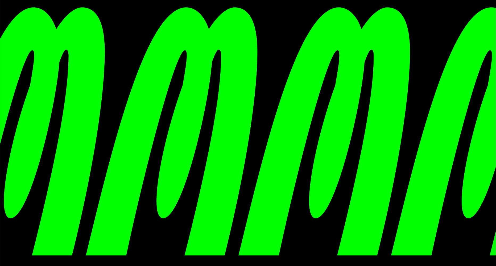
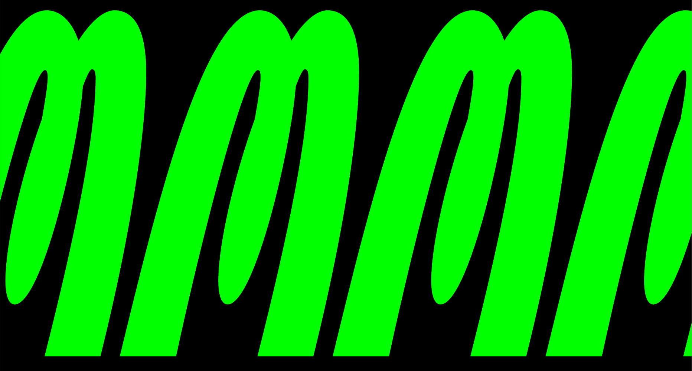

Process
Afrikola explores possibilities how to interpret handwriting and what each family member contribute to the whole type family — what can be shared and what preserved. It started as a small exercise at workshop with Afrika and turned into exciting journey full of discoveries.
First experimentations with Afrikola followed one direction and didn't want to walk off the path to explore different possibilities. It used to be a set of monospace weight styles. After decreasing interest I told to myself that I have to do something with it. I took my courage and came up with a plan on ho to refresh Afrikola. I analyzed the biggest problems that it had and fixed them, though still respect the original concept.
Afrikola has a plan to become family of multiple styles that offer lot of possibilities, combinations and experiments. It already features Headline italic style, it will soon welcome text style and later more weights or italics for these.